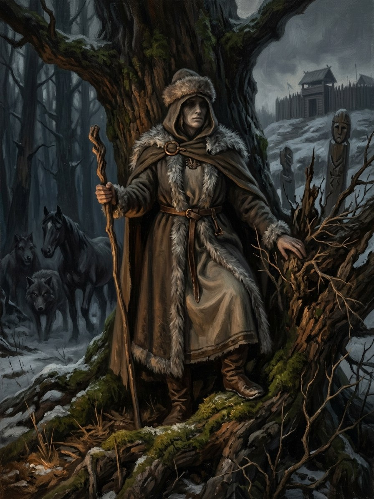

Medeina¶
Relations
Force-faces: Šaknų Motina (Root-Mother)
Patron of: Girinis / miškinis (grove-keepers) — Forests and wild beasts are her old domain, now the Root-Mother’s.
Domain Forests, the hunt, wild beasts
Layer God (Layer I) · her grief fused with Žemyna's in the 13th-century crusades; merged into the Root-Mother
Force-face Šaknų Motina, who speaks with both voices
Offerings None attested in detail, and the saga assigns none: what the Root-Mother is owed (the forest kept, the axe stopped)
Taboos A hare crossing the path (Volhynian Chronicle, 1252: Mindaugas would not enter a grove)
Signs None under her name. Her work is the swamp that eats trackers, woods that guide scouts, wolves that attack riders with foreign seals
Through the Root-Mother. She is never named in the books. She exists in the Root-Mother's wild, partisan grief.
Her wolves. The Root-Mother's servants, the Iron Wolves, were first the men who lay down in the Dykra mud after the Order emptied Sudovia.
A voice of her own. None is left.
Fused grief. The price is the Root-Mother's: the Amber Debt, and wolves leaving part of the soul in the bog.
Medeina

Medeina · god¶
Type |
god |
Note |
Goddess of forests, wild beasts, wolves, and the wilderness hunt. |
Folk sources [Historical record]¶
Medeina (Medeinė), from medis “tree” or medė “forest”, is the Baltic goddess of forest and hunt. A deity usually read as Medeina is among the gods Mindaugas still worshipped, according to the Volhynian Chronicle’s entry for 1252 (the form is corrupt; the reading is conventional). Jan Łasicki lists “Modeina et Ragaina” as forest and hunting goddesses (c. 1582), Długosz and Stryjkowski compare her to Diana, and Daukša names her. She is often equated with Žvorūna (“wild beast”), glossed “the bitch” in the Malalas insert (c. 1261), but the identification is common and uncertain. Greimas portrays an unmarried, alluring huntress with divine and demonic sides who guards the forest rather than aids hunters; the hare, the she-wolf and wolf packs are her animals in later reconstruction.
In the saga¶
Domain: forests, the hunt, wild beasts. Element: none. Force-face: merged into the Root-Mother: in the saga Medeina’s and Žemyna’s grief fused during the 13th-century crusades, and the Root-Mother speaks in both voices. That fusion is why the Root-Mother’s servants are wolves, the Iron Wolves, who were first men who lay down in the Dykra mud after the Order emptied Sudovia (1277–83).
She is never named in the books. She exists only in the Root-Mother’s wild, partisan grief: the swamp that eats Skirgaila’s trackers (Book I ch. 16), the woods that guide Lithuanian scouts (Book III ch. 16), the wolves that attack only riders with foreign seals (Book V ch. 11). Gap noted: no scene names or invokes her; a single naming (a hunter’s offering) would anchor her. Weakness: the forest she guards is felled, and she has no distinct voice left.
Offerings & taboos¶
No offering to her is attested in detail, and the saga assigns none separately: what the Root-Mother is owed (the forest kept, the axe stopped) is what Medeina was owed. The one recorded taboo nearby is the hare: the 1252 chronicle says Mindaugas would not enter a grove if a hare crossed his path.
Pronunciation¶
meh-DAY-nah (IPA [mʲɛˈdʲɛɪnɐ]), stress me-DEI-na. ei is one diphthong.
Connections¶
graph LR
girinis["Girinis / miškinis (grove-keepers)"]
medeina["Medeina"]
root_mother["Šaknų Motina (Root-Mother)"]
medeina -->|Patron of| girinis
root_mother -->|Force-face of| medeina
style medeina stroke-width:3px